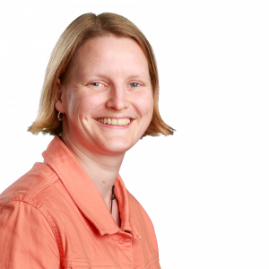
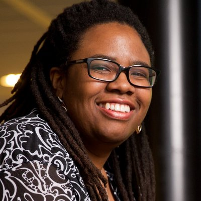

Previous editions
Joy of Coding 2019 is the seventh in a series of conferences dedicated to software development.
The team
Alex Kuiper - @NightWhistler - is CTO of QSD, a VIM nerd, Whovian, runner and model aviation fan. He heard about this obscure new conference called ‘Joy of Coding’, decided to visit and loved it so much he kept coming back and ended up joining the team. Did consulting work for many companies and now works at Dapas, trying to prove that architects do in fact write code.

Linda van der Pal - @DuchessFounder - is a developer at Trailblazers, the founder of Duchess, Java Champion. co-organizer of the Dutch Devoxx4kids events and an active member of the Java community in general. She has been a Java developer for several companies since 2002.

Jenny Biekman - @Jenny_KuiBie - Jenny Biekman is a software tester and scrum master by day and a gamer by night. After being volunteerd to help out she fell in love with Joy of Coding and joined the team. Her favorite things are test automation and zumba.
Erik Hooijmeijer - @CtrlAltDev - is principal developer at 42 B.V. Loves coding for fun and profit, collector of 8 bit commodore computers, former organizer of Masters of Java. Fell in love with Joy of Coding at the first edition, organized a workshop at the second. Had trouble attending subsequent editions and has now chosen the smart way to attend, help organizing it!

Paul van der Maden - is a versatile and independent software developer in the Java landscape. Besides coding on multiple big and small projects, this team player and music lover is always looking to explore exiting new lands. So, he joyfully grabbed the chance this year to broaden his horizon by co-organizing the 2019 JoC edition.
Alumni
We are very grateful to everyone who has contributed to our conference in the previous editions: Felienne Hermans, Peter Hilton, Barre Dijkstra, Reindert-Jan Ekker, Arne Timmerman, Martin van Amersfoorth, Cies Breijs, Rino Kadijk, Freek Leemhuis, Anna Gos, Jacques Bouman, Mark van Straten, Daan van Berkel, Jettro Coenradie and Marc Lainez.
Legal
Joy of Coding is organised by Stichting Devnology, a Dutch non-profit organisation registered with the Kamer van Koophandel (#17251880). Our VAT number is NL820757573B01.
Our mailing address:
Aart van der Leeuwkade 342274 KZ Voorburg
the Netherlands